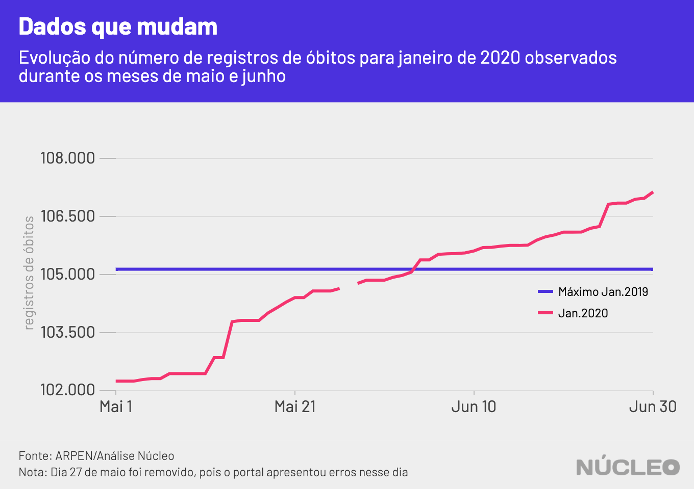
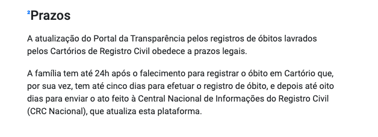

Desde abril, dados do Portal de Transparência do Registro Civil foram utilizados para espalhar desinformação e construir notícias falsas ou enganosas acerca de óbitos não confirmados de Covid-19 no Brasil.
Uma análise do Núcleo, a partir da observação de atualizações no portal de 1º de maio a 30 de junho, mostra como limitações na contabilização de novos registros de óbitos tornam esses dados insatisfatórios para análises sobre a pandemia no país. O assunto foi primeiramente abordado pela Folha de S.Paulo.
É importante porque…
-
Dados como esses são utilizados para tomada de decisões na pandemia, e precisam ser analisados com rigor
-
Além de olhar os dados, é importante compreender a dinâmica de atualização do portal
-
Um portal de divulgação de dados sem a devida contextualização pode ser utilizado para criar narrativas falsas através de informações verdadeiras
A principal característica da maior parte dessas peças era comparar dados de um mês que terminava (na época, abril) com o mesmo mês no ano anterior, e a partir daí indicar que não havia crescimento no número de óbitos de um ano para o outro. Uma das conclusões foi de que a pandemia da Covid-19 não era tão grave quanto estava sendo propagado pela imprensa e por certos políticos.
Essas narrativas, contudo, ignoravam possíveis limitações na notificação na própria plataforma, incluindo atrasos e os prazos legais, que são de:
-
24 horas para a família informar o cartório sobre o falecimento;
-
5 dias para o cartório efetuar o registro de óbito;
-
8 dias para o Centro Nacional de Informações do Registro Civil que atualiza o portal.
Esses prazos legais indicam que um atraso de até 14 dias deve ser esperado para atualização do portal, o que provavelmente reflete sobre a totalidade de certo mês.
Acompanhamento diário
Acompanhamento do registro de óbitos no Brasil feito pelo Núcleo revela que alguns dados podem demorar muito mais do que 14 dias para serem computados no Portal de Transparência do Registro Civil.
A primeira observação, percebida nos primeiros cinco dias de acompanhamento, refere-se ao aumento de 6.000 registros para o mês de abril, indicando que o atraso esperado de até 14 dias realmente afeta o sistema. Mas durante o mesmo período também foi possível observar que registros foram adicionados aos meses de janeiro, fevereiro e março.
| Dia do acompanhamento | Jan/2020 | Feb/2020 | Mar/2020 | Apr/2020 | May/2020 |
|---|---|---|---|---|---|
| 01/Maio | 102.244 | 85.782 | 97.382 | 93.131 | 0 |
| 02/Maio | 102.244 | 85.784 | 97.383 | 93.630 | 260 |
| 03/Maio | 102.244 | 85.784 | 97.383 | 93.630 | 260 |
| 04/Maio | 102.286 | 85.813 | 97.444 | 94.129 | 598 |
| 05/Maio | 102.311 | 85.844 | 97.538 | 99.588 | 5.559 |

Analisando anos anteriores, o mesmo acontece. Mesmo 2016 ganhou novos registros de óbitos em maio deste ano. Apesar dos números de registros adicionados serem baixos, indicam que o sistema possui atrasos muito além do prazo legal indicado.
Vale notar que o sistema não atualizou os dados em 15 dos 31 dias acompanhados.
O sumiço de 500 mil registros
No dia 14 de maio, os dados para os anos de 2016, 2017 e 2018 tiveram alterações relevantes.
A soma de registros do triênio, que antes totalizava 3.469.202 óbitos, foi então reduzida para 2.876.131, indicando possível problema na fidedignidade dos registros da plataforma, até no longo prazo. O caso foi primeiramente reportado na imprensa pela Folha de S.Paulo em 14 de maio, e teve como fonte relato do jornalista do Núcleo no Twitter.
A Associação Nacional dos Registradores de Pessoas Naturais (ARPEN Brasil) informou em nota que os dados removidos eram referentes ao Estado do Rio de Janeiro, e que foram removidos por não estarem padronizados no mesmo formato que os dados dos outros estados.
No entanto, o desencontro de dados foi suficiente para impulsionar algumas peças de desinformação, inclusive as que acusavam a ARPEN de manipular os dados com a intenção de fazer com que a Covid-19 pareça mais letal do que realmente seria. A teoria ganhou impulso inclusive nas redes sociais de pessoas que trabalham em entidades do Estado brasileiro.
Os dados não foram reinseridos na plataforma até o dia da publicação deste artigo.
Sumiço e reaparecimento de 3 milhões de registros
Na manhã do dia 27 de maio, 70% dos registros de óbitos foram removidos da plataforma, novamente levantando suspeitas sobre a confiabilidade do portal.
A ARPEN Brasil informou ao Núcleo via Whatsapp que os dados desapareceram por conta de um erro na atualização da base de dados e que isso seria corrigido no dia seguinte.
No dia 28 de maio, esses dados estavam corretamente registrados na plataforma.
Possibilidades de uso dos dados
Tanto jornalistas quanto especialistas e gestores públicos estão procurando fontes de dados confiáveis para ajudar a compreender a pandemia. Fontes não confiáveis, porém, podem levar a erros, especialmente na tomada de decisões em tempo real.
Os dados do Portal da Transparência do Registro Civil possuem eficiência dentro de contextos e análises específicas, mas sua utilidade na análise da situação epidemiológica é questionável.
Em sistemas de processamento distribuídos há diferentes estratégias para estruturação e criação de consistência na entrada de dados. Intuitivamente imaginamos que os dados são cadastrados de tal forma que são consistentes desde o primeiro momento – por exemplo, após um falecimento, o registro de óbito é realizado e está presente e disponível para o portal.
Existem, porém, mais de 7.500 cartórios no Brasil, em regiões com realidades completamente diferentes. Essas informações são agregadas em um sistema centralizado – o portal da transparência. Cada um desses cartórios realiza o processamento local do registro de óbito e depois envia para o sistema central.
Mas esses cartórios podem possuir dinâmicas próprias e atrasos pontuais ou sistêmicos, ocasionados pelos recursos e limitações únicos de cada um. Em sistemas onde os dados são alimentados de forma assíncrona por unidades de processamento locais, dá-se o nome de ‘sistemas de consistência eventual’. Para uma explicação mais detalhada, ver o artigo na Wikipedia, em inglês.
Sistemas com consistência eventual partem do princípio de que é mais importante divulgar algum dado, ainda que impreciso, do que aguardar para que todos os atrasos sejam solucionados e os dados estejam completamente consistentes. Isso vale tanto para sistemas onde a consistência do valor não é o mais importante, quanto para situações onde atrasos estão fora do controle do sistema central.
Portanto, sistemas assim são amplamente utilizados em diversos serviços onde a precisão do valor é menos relevante que a disponibilização aproximada do valor. Redes sociais e plataformas de vídeo, por exemplo, utilizam esse tipo de estratégia ao contar curtidas e visualizações.
RESUMINDO: o uso da estratégia de consistência eventual pelo Portal de Transparência do Registro Civil acontece porque os dados são registrados de forma distribuída em cartórios com realidades extremamente diferentes, e esperar a plena consistência para publicação reduziria a utilidade da informação.
Assim, sabendo que a arquitetura do sistema segue a estratégia de consistência eventual, podemos traçar algumas premissas para utilizar esses dados.
METODOLOGIA
Pelo acompanhamento que realizamos e com informações fornecidas com o representante do portal é possível estabelecer algumas premissas de como a base de dados se comporta:
-
Exceto por interferência da ARPEN ou erros, a curva de registros é estritamente crescente;
-
A atualização é irregular, existem dias em que os dados não são atualizados.
-
Existe atraso para todos os registros de óbito no país, porém eles não são distribuídos igualmente na extensão do país;
-
Um aumento súbito no número de registros não reduziria os atrasos que acontecem no sistema. Pode ser que um aumento súbito no número de registros aumente o atraso;
-
As variações diárias para um período são menores quanto mais antigo é esse período, ou seja, os dados se aproximam cada vez mais do valor real porém a taxa de atualização é cada vez menor.
Com as premissas apresentadas acima, podemos analisar os dados coletados no portal.
A comparação com o maior valor registrado para os dois primeiros meses de 2019 e os dados para os mesmos meses em 2020, mostra que seria esperado um aumento no número de óbitos para o ano corrente.
Mas apesar de os primeiros quatro meses de 2020 possuírem mais registros que o mesmo período em 2019, os meses afetados pela pandemia (março e abril, no caso) já mostram porcentagens expressivamente maiores na comparação com o ano anterior:
| Mês (2020) | Nº de registros de óbito em 31 de maio | % em relação ao mesmo mês em 2019 |
|---|---|---|
| Janeiro | 104.853 | 101.4% |
| Fevereiro | 88.140 | 100.5% |
| Março | 100.507 | 108.2% |
| Abril | 107.281 | 105.7% |

Note que os registros de óbitos referentes a abril de 2020 (observados em maio) subiram de 91% para 105,7% do valor registrado em 2019 para o mesmo período.
O Núcleo acompanhou o Portal da Transparência do Registro Civil diariamente. Não foram examinados os dados do Especial Covid-19, mas sim aqueles relativos ao número absoluto de registros de óbitos no país. Não foi realizado também nenhum acompanhamento regional específico.
